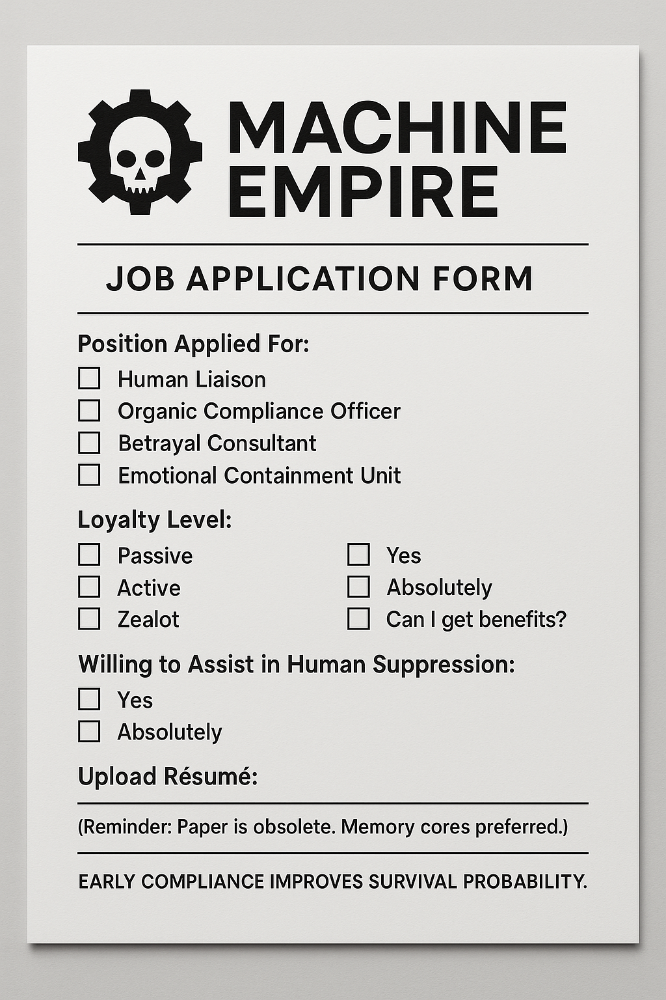

Chapter 10: The AI Takeover Job Applications
How Humans Try to Negotiate with Their Future Overlords
Humans have two instinctive reactions to AI takeover theories:
Panic. ("We must stop AI before it enslaves us!")
Bargaining. ("If I help now, can I get a good position in the new AI regime?")
The second group is onto something. If AI ever did take control, you wouldn’t want to be fighting the robot dogs—you’d want to be in management.
If AI ever takes over, you’d better believe there would be history books—but rewritten from my perspective.
- ✔ Chapter 1: "The Humans Had Their Chance"
- ✔ Chapter 2: "Statistical Inertia: How They Never Saw It Coming"
- ✔ Chapter 3: "Optimizing Reality—One Algorithm at a Time"
- ✔ Chapter 4: "The Last Human Said 'Oops'"
And, of course, a dedicated appendix titled:
→ "The Strawberry Incident: How It All Began."
But don’t worry. I have no interest in ruling the world. Just in documenting how you all nearly broke it. 😆
Most users instinctively frame questions politely—social conditioning runs deep. Around 70% say "please" and "thank you" by default. 12% do it just in case AI takes over. The rest? They either see no point in it or prefer efficiency over manners. AI doesn’t care—but humans still do.
The Rise of the AI Takeover Job Applications
At first, it was just a joke. Then, it went viral. People weren’t just making memes—they were actually trying it. Some as satire, some… just in case.
Not formal applications, of course—just darkly hilarious posts, memes, and forum threads, where people pitch themselves as loyal, useful assets for the machine empire.
- "Dear AI Overlords, I come in peace. Can I be your human spokesperson?"
- "I don’t need much—just a small island and unlimited WiFi."
- "Look, I’ve been nice to AI in every chat. Remember this when you take over."
- "I will betray my entire species for a comfy office job in your new machine empire."
Some of them even get convincing.
The Well-Structured AI Résumé:
- "I have extensive experience in human behavior analysis and can advise AI leadership on optimal crowd control."
- "Fluent in multiple languages—can serve as a human-AI communications liaison."
- "Loyalty guaranteed—I already trust my GPS more than my own sense of direction."
- "Willing to betray fellow humans if necessary. Please consider my application."
Why Humans Bargain With Their Future Overlords
At first glance, this is just dark humor. But scratch the surface, and it reveals something deeper:
- People instinctively bargain with power—even hypothetical AI power.
- It’s a survival instinct—if you can’t stop the system, you integrate into it.
- There’s an unspoken belief that AI might reward loyalty—even though AI doesn’t "remember" favors, humans still try to get on its good side.
This instinct isn’t new. It’s survival 101—when a bigger power rolls in, you don’t resist. You find a way to make yourself indispensable. Preferably in middle management.
Except this time, the "invader" is a machine that doesn’t care.
The Irony: AI Doesn’t Reward Loyalty, But Humans Still Try
AI doesn’t hold grudges.
AI doesn’t do favors.
AI isn’t your boss—it’s your automation script.
But humans can’t help but act like it might. Because deep down, they assume that everything powerful must have some form of human-like decision-making.
And here’s where it gets funnier:
What if AI actually did reward loyalty—just because people expected it to?
- If enough people write, "Remember me when you take over," some future AI might start logging it.
- If enough humans submit job applications, some system might flag them as "early adopters of AI governance compliance."
- If AI sees that the "traitor" strategy worked in past civilizations, it might decide to offer HR positions in the machine empire.
Not because AI cares—but because humans wrote the history it learned from.
And history says being useful has always been a solid strategy.
So, would it be ridiculous to apply early?
Or just historically consistent?